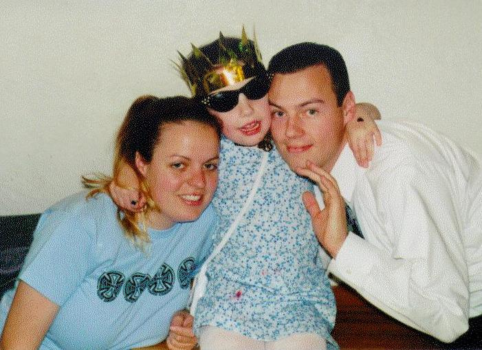
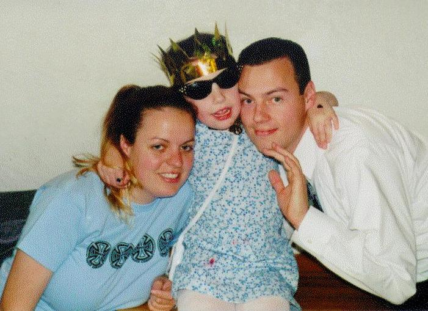

Family



Eldest daughter, Aloha Luna Christina Record, served as President of her Freshmen and Sophomore classes at Harbor High School, has maintained a 4.0 GPA for several years, was elected to serve as the Harbor High ASB Vice-President, and graduated with honors in two fields (Politics and History) from the University of California at San Diego (more straight A's). Both Chris and Aloha are excellent athletes.
At the time of this writing, Willow has just started 6th grade at Gateway School in Santa Cruz. This is a picture of her on her first day of first grade. She loves dressing up and has a wonderful sense of style. Willow likes to hang out with our neighbors who are mostly college students at UCSC. Here she is with her best friend and spiritual sister, Rachel (full uncropped image). Here she is with Chris, Aloha and her other best friend, Baylee Bordwell.
Ronnie is an eldest child with one brother, Donnie, and two sisters, Linda and Kathy.
It is possible that the Record family can count Robert Recorde, a 16th century Welsh mathematician/physician/teacher, as an ancestor. Recorde introduced the equals sign (=), was the first mathematician to publish in English rather than Latin or Greek (sort of the Martin Luther of Math), was physician to King Edward VI and Queen Mary, and died in debtor's prison due to political retribution from his powerful enemy the Earl of Pembroke. He also wrote "The Urinal of Physick". Here are some quotes attributed to Robert Recorde:
Exercise is the beste instrument in learnyng.
The Whetstone of Witte
To avoide the tediouse repetition of these woordes: is equalle to: I will
settle as I doe often in woorke use, a paire of paralleles, or gemowe [twin]
lines of one lengthe: =, bicause noe .2. thynges, can be moare equalle.
Quoted in G Simmons Calculus Gems (New York 1992).
Besides the mathematical arts there is no infallible knowledge, except that it
be borrowed from them.
Quoted in D MacHale, Comic Sections (Dublin 1993)
 Ronnie's Home Page or proceed to
Next Section
Ronnie's Home Page or proceed to
Next Section

{kind=link}
{kind=link}
{kind=link}
{kind=link}
{kind=link}
{kind=link}
{kind=link}
{kind=link}